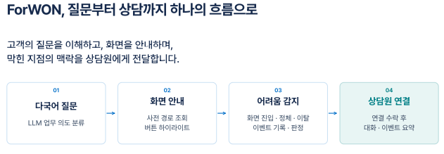
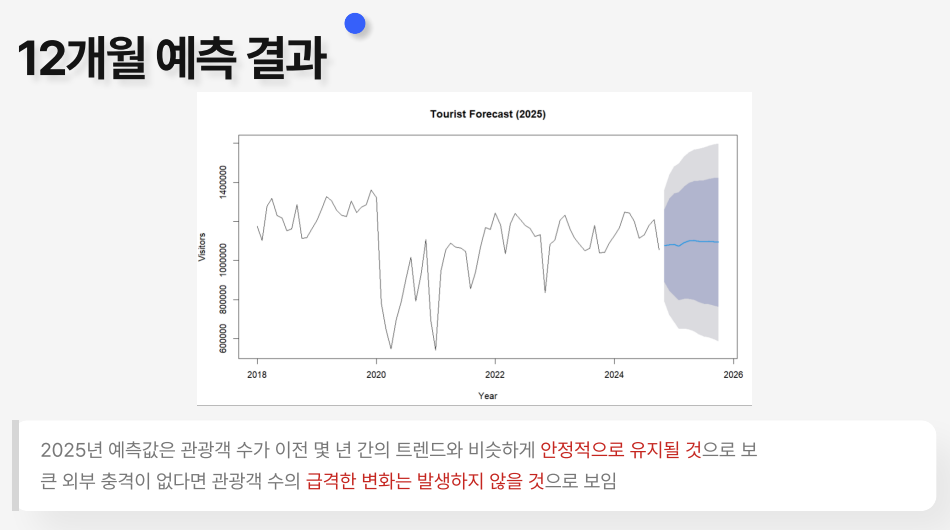

외국인 고객이 "어디를 눌러야 하는지"와 "무엇이 막혔는지"를 AI가 함께 풀어 주는 서비스
시기2026.10
인원5인 팀
Spring BootSpring AIOpenAI APIReact / ViteJPA · MySQL
문제: 다국어 앱이 있어도 "막힌 순간"은 고객 몫
약 703만 명5대 시중은행 외국인 고객 합산
+10.5%2023년 말 대비 증가
2026년 6월 말 기준, 은행 간 중복 포함 가능
어디서 업무를 찾아야 하는지 모릅니다.
다음 단계를 어떻게 진행할지 모릅니다.
막혔을 때 상담원에게 상황을 어떻게 설명할지 모릅니다.
해결: 질문 → 의도 분류 → 경로 안내
고객이 모국어로 질문하면 LLM이 업무 의도를 분류하고, 미리 정의해 둔 경로를 조회해 화면의 버튼을 하이라이트합니다. 고객은 강조된 버튼을 직접 눌러 진행합니다.

질문부터 상담까지 하나의 흐름
막힘 감지에서 상담 연결까지
서버는 화면 진입과 정체를 기록하다가, 아래 기준에 걸리면 고객에게 상담 연결을 제안합니다.
감지 항목
기준
의미
화면 정체
기본 7초 동안 다음 화면 없음
어디를 눌러야 할지 몰라 멈춘 상태
경로 이탈
세션 내 3회 누적
안내 경로에서 반복해서 벗어난 상태
고객이 수락하면 대화와 행동 기록을 AI가 요약해 상담원에게 넘기고, 상담원은 고객이 막힌 화면을 읽기 전용으로 확인합니다. AI 요약이 실패하면 규칙 기반 요약으로 대체해 상담 연결이 끊기지 않게 했습니다.
AI와 규칙의 역할 분담
시스템 아키텍처: 화면 안내, 업무 규칙, AI 처리, 데이터 저장을 분리
AI
고객이 무엇을 원하는지 이해, 대화·행동 기록 요약
규칙
어느 화면으로 안내할지 결정, 정체·이탈 감지, 요약 실패 시 대체 요약
AI가 틀리더라도 안내 경로는 통제할 수 있게 하려는 구조입니다.
앞으로는 실제 금융 시스템 연동, 인증·보안 강화, 분산 세션 관리, 상담 통신 개선으로 확장할 계획입니다.
Project 02
SK하이닉스 주가 예측: Transformer 기반 시계열 모델
복잡한 주가 흐름을 예측하고, 그 근거까지 해석한 프로젝트
유형팀 프로젝트
인원4인 팀
대상SK하이닉스 주가
PythonPyTorchTransformerFFT 주기성SHAP · LIME
문제의식
주가는 비선형이고 비정상적이라 기존 통계·머신러닝 모델로는 예측이 어렵습니다. 그래서 시계열 분해 + FFT 주기성 분석 + Transformer를 결합한 모델을 만들고, 예측값에 그치지 않고 왜 그렇게 예측했는지 설명할 수 있도록 해석 기법까지 붙이는 것을 목표로 했습니다.
데이터와 입력 구성
항목
내용
입력 변수
SK하이닉스 종가, 거래량, KOSPI 지수, 환율
전처리
변수별 정규화 후 90일 단위로 묶어 입력
모델 구조
입력90일 윈도우 (4개 변수)
시계열 분해이동평균으로 추세와 계절성 분리
포지셔널 인코딩시간 순서 정보 부여
인코더멀티헤드 셀프어텐션
출력예측 평균과 예측 밴드
학습과 검증
항목
설정
이유 / 의도
학습
AMP 혼합정밀도, AdamW (학습률 3e-4)
학습 속도와 메모리 효율
검증
Walk-Forward 검증 (5개 fold)
시간 순서를 지켜 미래 정보 누수와 과적합 점검
결과 표현
예측 평균 + 밴드, 실제 종가와 비교
밴드는 볼린저 밴드의 개념을 빌려 해석
실제 종가와 Transformer 예측 평균·예측 밴드 비교
해석: SHAP으로 본 예측 근거
예측 시점에서 약 90일 전 데이터의 영향이 가장 크고, 시점이 가까워질수록 영향이 줄었습니다.
종가, 거래량, KOSPI, 환율이 고르게 기여했고, 그중 종가의 영향이 조금 더 컸습니다.
한계와 개선 방향
한계 코로나19 같은 예외적 사건에는 약하고, 어텐션 패턴을 해석하기 어렵습니다.
개선안 글로벌 반도체 지수나 원자재 가격 같은 변수를 추가하고, 여러 모델을 앙상블합니다.
Project 03 · 개인 프로젝트
제주 관광객 수요 예측: 시계열 분석으로 12개월 앞을 보다
제주특별자치도관광협회 월별 입도현황(2018~2024)으로 2025년 12개월 수요를 예측
R시계열 분해ADF 검정ACF · PACFSARIMA생성형 AI 활용
8.46%MAPE (예측 오차)
(1,1,1)(1,1,1)[12]최종 선정 모델
1856.87AIC
1단계 · 데이터 탐색: 시계열 분해
계절성: 매년 7~8월과 4월에 방문객이 늘어납니다.
충격과 회복: 2020~2021년 코로나로 크게 줄었다가 회복해, 2023~2024년에는 이전 수준에 가까워졌습니다.
2단계 · 정상성 검정: ADF 검정을 단계별로
처리 단계
p-value
정상성
계절조정 데이터
0.33
비정상
계절 차분
0.29
비정상
계절 차분 + 일반 차분
0.01
정상 (만족)
계절 차분만으로는 비정상성이 남아, 일반 차분까지 더해야 정상성이 확보된다고 판단했습니다. 그래서 모델의 차분 차수를 비계절·계절 모두 1로 두었습니다.
3단계 · 차수 결정과 진단
ACF · PACFlag 1과 lag 12가 유의
차수 확정비계절·계절 구성요소를 모두 (1,1,1)로 결정
잔차 진단자기상관 없음, 정규분포에 가까움
예측2025년 12개월
생성형 AI를 쓴 방식: 제안받고, 검증하고, 비교하기
파라미터를 정할 때 생성형 AI의 제안을 받았지만, 그래프 해석만으로 나온 조합은 계절성을 충분히 반영하지 못했습니다. 그대로 쓰지 않고 위의 ADF 검정으로 직접 확인해 일반 차분이 더 필요하다고 판단했습니다. 이후 AI가 제안한 SARIMA 구조를 바탕으로 구성요소를 바꿔 가며 여러 조합을 비교했고, 최종 모델을 선정했습니다.

2025년 12개월 예측 결과. 급격한 변화 없이 안정적으로 유지될 것으로 예상
배운 점
AI의 제안은 통계 검정으로 다시 확인한 뒤에 썼고, 그래서 어떤 결과를 왜 믿는지 설명할 수 있었습니다. 다음에는 다변량 모델과 머신러닝으로 예측을 개선해 보려 합니다.
Project 04 · 5인 팀
알려주카: 제주 청년을 위한 정보 플랫폼
제주의 다양한 정보를 제공하고 온·오프라인 네트워크를 만드는 서비스
인원5인 팀
담당생활정보 개발·디버깅, 입지분석 시각화
웹 개발·디버깅C++QGISPython공간 데이터 분석
왜 만들었나
제주에서는 20대 청년의 전출이 가장 많아 청년 유출이 이어지고 있습니다. 청년이 필요한 정보를 한곳에서 찾고 서로 연결될 수 있게 하면 정착에 도움이 된다고 보고, 도에서 청년 유출을 막으려는 방향과 맞는 서비스를 기획했습니다.